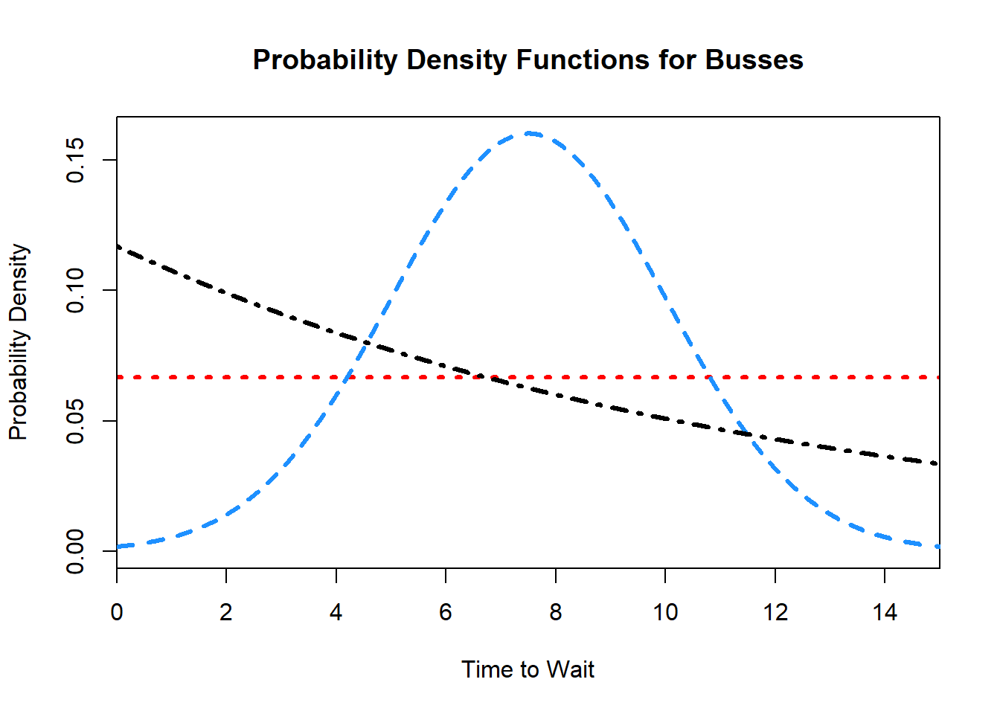
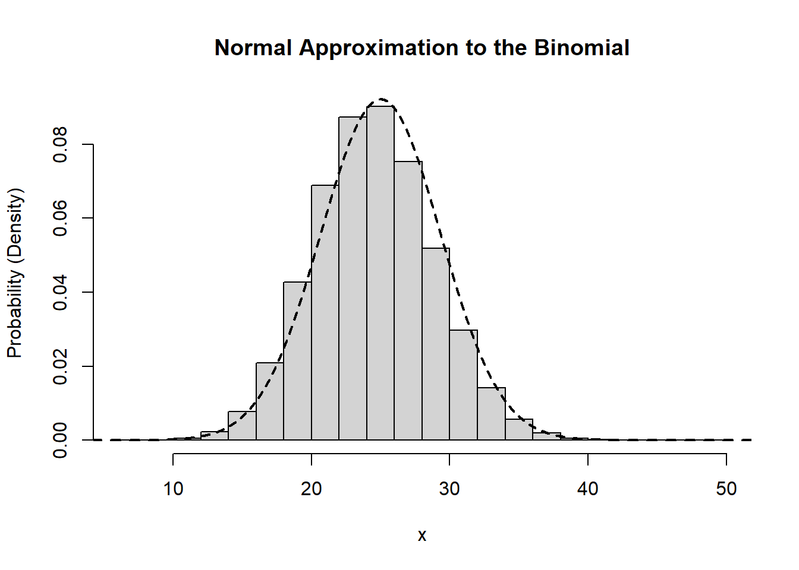

9 Continuous Random Variables
Our discussions of probability distributions and their summaries have focused entirely on discrete random variables. To recap, a discrete random variable is any random numeric quantity that can take on a countable number of values. Discrete random variables are defined in contrast to continuous random variables, which take on values over the span of intervals in uncountably large sets. Suppose that \(X\) can take any real number between \(0\) and \(1\). There is no way to enumerate the set of possible values for this random quantity, and so it must not be discrete.
Many quantities of interest are better treated as a continuous quantity rather than a discrete one even when this is not technically correct. For instance, time measured in seconds is often best thought of as continuous, even though any stop watch used to grab these measurements will have some limit to the precision with which they can measure. Similarly, lengths and heights will often be better treated as continuous quantities, even though any measuring device will necessarily have some minimal threshold after which it cannot discern distances. Thus, deciding whether a quantity is continuous or discrete is sometimes a judgment call. In general discrete quantities are harder to work with when the set of possibilities is very large. In these cases, not much is lost by treating the random variables as though they were continuous. This distinction is another area which requires the active development of intuition, but once present, the distinctions become second nature.1
9.1 Continuous Versus Discrete
Distinguishing whether a random quantity is continuous or discrete is crucial as, broadly speaking, the two types of quantities are treated differently. The same underlying ideas are present, but the distinctions between the two settings require some careful thought. The use of continuous random variables necessitates an understanding of introductory calculus. These course notes are designed to be understood without any experience in calculus, and as a result, we will not spend much time focusing on continuous random variables. However, continuous random variables are the dominant type of random variables outside of introductory courses. As a result, understanding the distinctions, and becoming familiar with how they are to be manipulated is an important skill.
The key difference between discrete and continuous random variables is that, for discrete random variables the behaviour is governed by assessing \(P(X=x)\) for all possible values of \(x\), while for continuous random variables \(P(X=x)=0\) for every value of \(x\). This is likely a surprising statement, and as such it is worth reiterating. With discrete random variables we discussed how all of the probabilistic behaviour is governed by the probability mass function. This is defined as \(p_X(x) = P(X=x)\). If \(X\) is a continuous random variable, we must have \(P(X=x) = 0\). Correspondingly, continuous random variables do not have probability mass functions, and to understand the behaviour of these random variables we must us other quantities.
9.2 Cumulative Distribution Functions
To begin building to the continuous analogue of the probability mass function, we will start by focusing on events that are easier to define in the continuous case. Suppose that \(X\) is defined on some continuous interval. Instead of thinking of events relating to \(X=x\), we instead turn our focus to events of the form \(X \in (a,b)\) for some interval defined by the endpoints \(a\) and \(b\). Now note that, relying only on our knowledge of probabilities relating to generic events, we can rewrite \(P(X\in(a,b))\) slightly. Specifically, \[\begin{align*} P(X\in(a,b)) &= 1 - P(X\not\in(a,b))\\ &= 1 - P(\{X < a\}\cup\{X > b\}) \\ &= 1 - \left(P(X < a) + P(X > b)\right)\\ &= 1 - P(X > b) - P(X < a)\\ &= P(X < b) - P(X < a).\end{align*}\]

In words we know that the probability that \(X\) falls into any particular interval is given by the probability that it is less than the upper bound of the interval minus the probability that it is less than the lower bound of the interval. Notice that \(X < a\) is an event, and if we knew how to assign probabilities to \(X<a\) for arbitrary \(a\), then we could assign probabilities to any interval. Also note that, even in the continuous case, it make sense to talk of \(P(X < a)\) for some value \(a\). These intervals will contain an uncountably infinite number of events, and as such, can certainly occur with greater than \(0\) probability.
Consider an example with \(X\) defined on \([0,1]\). In this case we know that \(P(X<1)=1\). Note that we could have written \(P(X \leq 1) = 1\), which may have been more obviously true. However, \(P(X\leq 1) = P(\{X<1\}\cup\{X=1\}) = P(X<1) + P(X=1)\) and we know that \(P(X=1)=0\). In the continuous case we do not need to worry whether we use \(X\leq a\) or \(X < a\), and we will interchange them throughout.
Example 9.1 (Charles and Sadie Wait for the Bus) Charles and Sadie are visiting a large city and are getting around via public transit while there. They are not quite familiar with the bus schedules yet, but they know that the bus they are waiting for will show up sometime in the next \(15\) minutes. They realize that this is a continuous random quantity, and decide to pass the time by trying to reason about how long they will be waiting for the bus to arrive. To do so, they make the assumption that the bus is equally likely to show at any point during this interval.
- What is the probability that Charles and Sadie wait \(15\) or fewer minutes for the bus?
- What is the probability that Charles and Sadie wait \(5\) or fewer minutes for the bus?
- What is the probability that Charles and Sadie wait exactly \(7\) minutes for the bus?
- What is the probability that Charles and Sadie wait between \(8\) and \(12\) minutes for the bus?
- What is the probability that Charles and Sadie have to wait longer than \(13\) minutes for the bus?
The centrality of events of the form \(X \leq a\) prompts the definition of a mathematical function which we call the cumulative distribution function.
Definition 9.1 (Cumulative Distribution Function) The cumulative distribution function of a random variable \(X\), typically denoted as \(F(x)\) or \(F_X(x)\), is defined as the function that gives the probability that the random variable is less than or equal to some threshold. That is, \(F_X(x) = P(X \leq x)\). We may also refer to the cumulative distribution function simply as the distribution function.
Once we have defined the distribution function for a random variable, using the above derivation we are able to determine the probability associated with any events based on intervals. It is worth noting that the cumulative distribution function can also be defined for discrete random variables. In the case of a discrete random variable, we would have \[F_X(x) = \sum_{k \in\mathcal{X}; k \leq x} p_X(k).\] Since it is simply the summation of the probability mass function it tends to be a less useful quantity.
Suppose that, for a random variable \(X\), we know the cumulative distribution function. This knowledge permits the computation of any probability associated with the random variable. Consider some event defined in terms of \(X\) which we may wish to determine the probability of. We know that events are subsets of the sample space. Every one of these events can be written using our basic set operations (unions, intersections, and complements) applied to intervals of the form \((a,b)\) and sets of the form \(\{x\}\).4 The axioms of probability allow us to compute probabilities across the set operations. Further, our knowledge of the cumulative distribution function, the conversion of \(P(X \in (a,b))\) into \(F_X(b) - F_X(a)\), and the fact that \(P(X=x) = 0\) for all \(x\) gives all of the results we need to derive probabilities for these events.
Example 9.2 (Charles and Sadie’s Light Bulbs) Charles and Sadie decide that they need to replace some light bulbs. In their research online, a particular manufacturer of light bulbs, Bayesian Brights, lists the cumulative distribution function for the lifetime of their bulbs, in hours. The model Charles and Sadie are considering is said to have a lifetime (in hours) governed by \[F_X(x) = 1 - \exp\left(-\frac{x}{10000}\right).\]
- What is the probability that a purchased lightbulb lasts for less than \(5000\) hours?
- What is the probability that a purchased lightbulb lasts for between \(7500\) and \(12000\) hours?
- What is the probability that a purchased lightbulb lasts for more than \(8000\) hours?
9.3 The Probability Density Function
The distribution function will be the core object used to discuss the probabilistic behaviour of a continuous random variable. All of the behaviour of these random quantities will be described by the distribution function, and as such we will take the distribution function as a function which defines the distribution of a continuous random quantity. This is all that we need in order to analyze these random variables, however, it may be a little unsatisfying in contrast with the discrete case.
We had set out to find a quantity that paralleled the probability mass function. Instead, we concluded that the cumulative distribution function can be made to play the same role in terms of describing the behaviour of the random quantity. Still, it may be of interest for us to have a function which takes into account the relative likelihood of being near some value. Suppose, for instance, that for a random variable defined on \([0,1]\) we wanted to know how likely it was to be in the vicinity of \(X=0.5\). We could take a small number, say \(\delta = 0.01\) and calculate \[P(X\in(0.5-\delta,0.5+\delta)) = F(0.5+\delta)-F(0.5-\delta).\] This is perfectly well defined based on our discussions to this point. Now, suppose that \(\delta\) is small enough so that it is reasonable to assume that this probability is fairly evenly distributed throughout the interval. Then, if we wanted to assign a likelihood to each value, we could divide this total probability by the length of the interval, \(2\delta\). As a result, in this case, the probability that \(X\) is nearly \(0.5\) will be approximately given by the expression \[\dfrac{F(0.5+\delta)-F(0.5-\delta)}{2\delta}.\]
We had taken \(\delta=0.01\), but the same process could be applied for smaller and smaller \(\delta\), say \(0.001\) or \(0.0001\). Intuitively, as the size of this interval shrinks more and more we are getting a better and better estimate for the likelihood that the random variable is in the immediate vicinity of \(0.5\). Moreover, as \(\delta\) gets smaller and smaller our assumption of a uniform probability over the interval becomes more and more reasonable. Unfortunately, we cannot set \(\delta=0\), exactly. We can ask what happens in the limit as \(\delta\) continues to get smaller and smaller. This question is in the purview of calculus, and can in fact be answered. While working out the answer is beyond the scope of the course, we will provide the result anyway.5 The resulting function is called the probability density function, and is related to the cumulative distribution function through derivatives (and integrals).
Definition 9.2 (Probability Density Function) A random variable \(X\), with cumulative distribution function \(F(x)\), is further characterized by its probability density function, denoted \(f(x)\). The density function describes the relative likelihood of a random variable taking on values in a particular interval, and mirrors the behaviour of the probability mass function in the discrete case. Formally, the probability density function is equal to the derivative of the cumulative distribution function.
Roughly speaking, the density function evaluates how likely it is for a continuous quantity to be in a small neighbourhood of the given value. Critically, probability density functions do not give probabilities directly. In fact, probability density functions may give values that are greater than \(1\)!6 Still, if we see the shape of the probability density function, we can state how likely it is to make observations near the results of interest. We will often graph the density functions. The high points of the graph indicate regions with more probability than the regions of the graph which are lower. Again, the specific probability of any event \(X=x\) will always be \(0\), but some events fall in neighbourhoods which are more likely to observe than others.7
Example 9.3 (The Types of Busses in the City) After returning from their trip to the big city, Charles and Sadie are talking to their friend Garth, with a lot more experience in the matter. Garth explains that there are actually several different types of busses, with different arrival schedules over the \(15\) minute interval. Knowing that Charles and Sadie have started to learn about probability density functions, Garth draws out the following sketch, giving the probability density function for three different busses.
- Which of the three buses is most likely to show up around the \(1\) minute mark?
- Which of the three buses is most likely to show up around the \(6\) minute mark?
- Which of the three buses is most likely to show up around the \(14\) minute mark?
- Which bus is most likely to show up at \(10\) minutes exactly?
- During which intervals would each of the buses be more likely than the other two to arrive?
- Describe the behaviour of each of the three buses.
9.4 Using Continuous Distributions
With the exception of the previously indicated differences, continuous and discrete random variables are treated similarly. The tools to analyze them differ8, but the fundamentals remain the same. It is possible to compute expected values, medians, and modes, with roughly the same interpretations. It is possible to describe the range, interquartile range, and variance, with similar interpretations. The axioms of probability still underpin the manipulation and analysis of these random variables. The distinction is merely that in, place of elementary mathematics to complete the calculations, calculus is required.
Just as with discrete distributions, there are named continuous distributions. These are typically governed by either a density function or cumulative distribution function, alongside the expected value and variance. Just like the named discrete distributions, by matching the underlying scenario to the correct process we are able to avoid a lot of work in understanding the behaviour of the random quantities. Now, because calculus is not assumed knowledge, we will not work too widely with continuous random variables. We will introduce only two named continuous distributions: the uniform distribution9 and the normal distribution.10
9.5 The Uniform Distribution
The uniform distribution11 is parameterized over an interval specified as \((a,b)\). On this interval, equal probability density is given to every event, which is to say that the density function is constant. Specifically, if \(X\sim\text{Unif}(a,b)\) then \[f(x) = \begin{cases}\frac{1}{b-a} & x \in (a,b) \\ 0 & \text{otherwise}.\end{cases}\] From the density function we can find that \[F(x) = \frac{x - a}{b - a}\] for \(x \in (a,b)\), with \(F(x) = 0\) for \(x < a\) and \(F(x) = 1\) for \(x > b\). Moreover, we have \(E[X] = \frac{a+b}{2}\) and \(\text{var}(X) = \frac{(b-a)^2}{12}\).
Example 9.4 (Characterizing the Wait Time) Still considering the wait time for buses in the city, Sadie points out that the bus they were waiting for follows a \(\text{Unif}(0,15)\) distribution. They can use their newfound wisdom to make deeper conclusions about the process!12
- How long should they expect to wait for the bus?
- What is the variance for the amount of time that they will be waiting?
The uniform distribution is analogous to the discrete uniform. Any time there is an interval of possible outcomes which are all equally likely, the uniform distribution is the distribution to use. Compared with other distributions it is also fairly straightforward to work with, which makes it a useful demonstration of the concepts relating the continuous probability calculations.13
9.6 The Normal Distribution
The normal distribution, also sometimes referred to as the Gaussian distribution, is a named continuous distribution function defined on the complete real line. The distribution is far and away the most prominently used distribution in all of probability and statistics. In fact, most people have heard of normal distributions even if they are not aware of this fact. Any time that there is a discussion of a bell curve, for instance, this is in reference to the normal distribution. Normally distributed quantities arise all over the place from measurements of heights, grades, or reaction times through to levels of job satisfaction, reading ability, or blood pressure. There is a tremendous number of normally distributed phenomena naturally occurring in the world, which renders the normal distribution deeply important across a wide range of domains.
Perhaps more important than the places where the normal distribution arises in nature are the places where it arises mathematically. At the end of this course we will see a result, the central limit theorem, which is one of the core results in all of statistics. Much of the statistical theory that drives scientific inquiry sits atop the central limit theorem. And at the core of the central limit theorem is the normal distribution. It is virtually impossible to overstate the importance of the normal distribution, and as a result, it is worthy of investigation.
9.6.1 The Specification of the Distribution
A normal distribution is parameterized by two parameters: the mean, \(\mu\), and the variance \(\sigma^2\). We write \(X\sim N(\mu,\sigma^2)\). These parameters directly correspond to the relevant quantities such that \(E[X] = \mu\) and \(\text{var}(X) = \sigma^2\). The density function is given by \[f(x) = \frac{1}{\sqrt{2\pi}\sigma}\exp\left(-\frac{(x-\mu)^2}{2\sigma^2}\right).\] This can be quite unwieldy to work with, however, when it is plotted we see that the normal distribution takes on a bell curve which is centered at \(\mu\).

9.6.2 The Standard Normal Distribution
Normally distributed random variables are particularly well-behaved. One way in which this is true is that if you multiply a normally distributed random variable by a constant, it will remain normally distributed, and if you add a constant to a normally distributed random variable, it will remain normally distributed. Consider, for \(X\sim N(\mu,\sigma^2)\), taking the \(X - \mu\). From our discussions of expected values we know that \(E[X-\mu] = E[X]-\mu = 0\). Furthermore, adding or subtracting a constant will not change the variance. Thus, \(X-\mu\sim N(0,\sigma^2)\).
Now, consider dividing this by \(\sigma\), or equivalently, multiply by \(\dfrac{1}{\sigma}\). The expected value of the new quantity will be \(\dfrac{1}{\sigma}\times 0 = 0\), and, from our discussions regarding the variance of linear transformations, the variance of the new quantity will be \(\frac{1}{\sigma^2}\times\sigma^2 = 1\). Taken together then, if \(X\sim N(\mu,\sigma^2)\), \[Z = \frac{X - \mu}{\sigma} \sim N(0,1).\] This holds true for any normal distribution with any mean or variance values. This straightforward transformation allows us to discuss normal distributions in terms of \(N(0,1)\). We call this the standard normal distribution, and will typically use \(Z\) to denote a random variable from the standard normal distribution.
Definition 9.3 (Standard Normal Distribution) The standard normal distribution is the version of the normal distribution with mean \(0\) and variance \(1\). We say that \(Z\) follows a standard normal, and write \(Z\sim N(0,1)\), if the density of \(Z\) is given by \[f_Z(z) = \frac{1}{\sqrt{2\pi}}\exp\left(-\frac{z^2}{2}\right).\] We denote the density of \(Z\) as \(\varphi(z)\), and the cumulative distribution function of \(Z\) as \(\Phi(z)\). The cumulative distribution function, \(\Phi(z)\), does not have a nice form to be written down, however, it is a commonly applied enough function that many computing languages have implemented it, including of course R.14
The utility in this process of converting normally distributed random variables to be standard normal random variables, a process known as standardization, is demonstrated by realizing that events can be converted using the same transformations. Specifically, suppose we have \(X \sim N(\mu,\sigma^2)\), and we want to find \(P(X \leq x)\). Note that, \(X \leq x\) must also mean that \[\frac{X-\mu}{\sigma} \leq \frac{x - \mu}{\sigma},\] through an application of the same transformation to both sides. But we know that the left hand side of this inequality is exactly \(Z\), a standard normal random variable with cumulative distribution function \(\Phi(z)\). Thus, \[P(X \leq x) = P\left(Z \leq \frac{x - \mu}{\sigma}\right) = \Phi\left(\frac{x-\mu}{\sigma}\right).\] Using this trick of standardization any normal probability can be converted into a probability regarding the standard normal.
Example 9.5 (Charles and Sadie Explore House Plants) Charles and Sadie learn that the heights of fully grown house plants are often normally distributed. They are exploring which plants will work best in their new apartment, but are finding it difficult to reason about them in comparison to one another. Some plants end up being taller on average with a lot more variability, while others may be shorter but far more certain. Sadie realizes that the cumulative distribution function of a standard normal, \(\Phi(z)\), can be evaluated using their smart phones. As a result, they get to work expressing different probabilities in terms of \(\Phi(z)\).
They are comparing four different plant species. These species have heights according to the following random variables.
- Plant \(A\) has height \(X\), which follows a normal distribution with mean \(90\) and variance \(100\).
- Plant \(B\) has height \(Y\), which follows a \(N(110, 400)\) distribution.
- Plant \(C\) has height \(V\), which follows a normal distribution centered on \(70\) with standard deviation \(7\).
- Plant \(D\) has height \(W\), which follows a normal distribution with \(\mu=85\) and \(\sigma^2 = 81\).
Express each of the following probabilities in terms of \(\Phi(z)\), the cumulative distribution function of a standard normal random variable.
- One spot the plants cannot be too tall. What is the probability that they can fit plant \(A\) into a spot which cannot accommodate plants taller than \(80\)cm?
- A second spot would be strange to have too short of a plant in. If they require the plant to be at least \(125\)cm, what is the probability they can use plant \(B\)?
- A third spot can accommodate plants that are either under \(60\)cm if they use a stand, or else over \(90\)cm. How likely is it that plant \(C\) will work in this spot?
- A fourth spot requires a plant that is somewhere between \(80\)cm and \(90\)cm. What is the probability that plant \(D\) will work?
As a result, combining our knowledge of continuous random variables, with the process of standardization we are able to calculate normal probabilities for any events relating to normally distributed random quantities. Moreover, since the shape of the normal distribution is so predictable, it is often easy to draw out the density function, and indicate on this graphic the probabilities of interest, which in turn helps with the required probability calculations. Calculating probabilities from normal distributions remains a central component of working with statistics and probabilities beyond this course. Developing the skills and intuition at this point, through repeated practice is a key step in successfully navigating statistics here and beyond.
When you have access to a computer, and your interest is in calculating a normal probability, as described above, there is not typically a need for standardization. However, it remains an important skill for several reasons. First, by always working with the same normal distribution, you will develop a much more refined intuition for the likelihoods of different events. It goes beyond working with the same family of distributions, you get very used to working with exactly the same distribution. Second, you will likely become quite familiar with certain key critical values of the standard normal distribution. These values arise frequently, and allow you to quickly approximate the likelihood of different events. Finally, as we begin to move away from studying probability and into studying statistics, the standard normal will feature prominently there.
9.6.3 Normal Probability Calculations in R
Just as with the named discrete distributions, R provides functions for calculating probabilities related to normal random variables. The relevant functions are the dnorm and pnorm function, for the density function and the cumulative distribution function, respectively. These functions can take arguments for the mean and standard deviation15 of the normal. If not provided, it will default to the standard normal.
9.6.4 The Empirical Rule and Chebyshev’s Inequality
Another way in which the normal distribution is well behaved is summarized in the emprical rule. The shape of the distribution is such that, no matter the specific mean or variance, all members of the family remain quite similar. This enables the derivation of an easy, approximate result, to help intuitively gauge the probabilities of normal events.
In words, the empirical states that almost all of the observations from a normal distribution will fall in the interval \(\mu\pm3\sigma\). In mathematical terms, the empirical rule is summarized as \[\begin{align*} P(\mu-\sigma\leq X \leq \mu + \sigma) &\approx 0.68 \\ P(\mu - 2\sigma \leq X \leq \mu + 2\sigma) &\approx 0.95 \\ P(\mu - 3\sigma \leq X \leq \mu + 3\sigma) &\approx 0.997. \end{align*}\] With the standard normal we can replace \(\mu\) with \(0\), and \(\sigma\) with \(1\) to get a version which is slightly more concise to state. It is then possible to combine these different intervals by recognizing the symmetry in the normal distribution. That is, \(P(\mu \leq X \leq \mu + \sigma) \approx \dfrac{0.68}{2} = 0.34\).
Example 9.6 (Charles and Sadie Can Never Have Enough House Plants) Their standardization efforts paid off, and Charles and Sadie found some plants that should fit the spaces that they need once they’ve grown up. Because of how well the plants worked out, they wanted to buy some more. They end up back at the store, and they know that they need to get a plant that will grow to be between \(70\)cm and \(106\)cm. They have several options for plants again:
- A plant with heights \(X\) according to \(N(88, 36)\).
- A plant with heights \(Y\) according to \(N(124, 324)\).
- A plant with heights \(W\) according to \(N(82, 144)\).
Unfortunately, Charles and Sadie forget their phones at home and so they cannot make direct calculations using \(\Phi(z)\). Can you help them, without using a normal probability calculator, determine which plant has the highest probability of being acceptable?
The empirical rule is not exact, and when computing probabilities with access to statistical software it is likely of limited direct utility. However, it is another tool to leverage to continue refining your intuition for the behaviour of random quantities. It is also a good “check†to have, giving an immediate sense of the likelihood of different events. If you compute an answer which seems to contradict the empirical rule, take a second look. If you have someone tell you that they have observed events which are out of line with the empirical rule, be skeptical.
The empirical rule is a useful result to aid in building intuition regarding the normal distribution. However, when quantities are not normally distributed, it does not apply. A related, though somewhat weaker result is Chebyshev’s Inequality. This will hold for any distribution, and can be seen as a useful extension to the empirical rule.
Here \(k\) can be any real number which is greater than \(0\). If \(k\leq 1\), this result is uninteresting since the bound simply is \(0\). However, taking \(k=2\) gives the \(0.75\) lower bound outlined above, which is a more useful result. Additionally, there is no requirement for \(k\) to be an integer here, and so, for instance, the probability of observing a value within \(\mu\pm\sqrt{2}\sigma\) is at least \(0.5\), for all distributions.
Example 9.7 (Fitting in the Strange Plants) Charles and Sadie selected a plant to fit in the spot requiring one between \(70\) and \(106\)cm. However, as they are checking out at the store they see a plant that they like much better. They are conflicted since they do not know whether this plant will satisfy normality assumptions in its height. The worker tells them that on average the plant grows to be \(88\)cm, and figures that the variance will be approximately \(51.84\). Charles and Sadie want to be at least \(90\%\) certain that the plant will fit. If they are, they will buy it!
- If they assume that the plants heights are normally distributed, should they buy the plant?
- If they do not assume that the plants heights are normally distributed, should they buy the plant?
9.7 Closure of the Normal Distribution
We have seen a certain type of closure property for the normal distribution when we discussed standardization. That is, adding and multiplying by constants does not change the distribution when working with normally distributed quantities. This is an interesting property which does not hold for most distributions, and makes normally distributed random variables quite nice to work with. The normal distribution has an additional type of closure property which is frequently used.
Suppose that \(X\) and \(Y\) are independent, with \(X\sim N(\mu_X, \sigma_X^2)\), and \(Y\sim N(\mu_Y, \sigma_Y^2)\). In this setting, \[X+Y\sim N(\mu_X+\mu_Y, \sigma_X^2 + \sigma_Y^2).\] That is to say, the addition of two independent normally distributed random variables will also be normally distributed. This extends beyond two in the natural way, simply by applying and reapplying the rule (as many times as is required).
If instead of considering the summation, we consider the average of \(n\) independent and identically distributed \(N(\mu,\sigma^2)\) variables, then \[\frac{1}{n}\sum_{i=1}^n X_i \sim N(\mu, \frac{\sigma^2}{n}).\] This follows from an application of our standard expectation and variance transformation rules. This type of result is central to the practice of statistics, and this closure under addition further aids in the utility of the normal distribution.
9.8 Approximations Using the Normal Distribution
A final utility to the normal distribution is in its ability to approximate other distributions. While several of these approximations exist, we will focus on the normal approximation to the binomial as an illustrative example. Historically, these approximations were critical for computing probabilities by hand in a timely fashion. Owing to the widespread use of statistical software, these use cases are more and more limited. However, there are two major advantages to learning these approximations. First, with an approximation it becomes easier to leverage the intuition you will build regarding the normal distribution in order to better understand the behaviour of other random quantities. Second, the normal approximation has the same flavour as many results in statistics, and so it presents an additional path to familiarity with these types of findings.
Suppose that \(X\sim\text{Bin}(n,p)\). Through knowledge of the binomial distribution, we know that \(E[X] = np\) and \(\text{var}(X) = np(1-p)\). If \(n\) is sufficiently large then it is possible to approximate a binomial distribution using a normal distribution with the corresponding mean and variance. That is, for \(n\) large enough, we can take \(X\sim\text{Bin}(n,p)\) to have approximately the same distribution as \[W\sim N(np, np(1-p)).\]

One consideration that we need to make when applying this approximation has to do with the fact that the normal distribution is continuous while the binomial distribution is discrete. As a result, the normal distribution can take on any value on the real line, where the binomial is limited to the integers. A question that we must answer is what to do with the non-integer valued numbers. The natural solution is to rely on rounding. That is, for any value between \([1.5, 2.5)\) we would round to the nearest integer, which is \(2\).
Definition 9.4 (Continuity Correction) The continuity correction is a technique for adjusting the probabilities computed using a continuous approximation to a discrete random variable. The correction relies on rounding non-integer values, which may be observed with regards to the continuous random variable, to the corresponding integer values for the discrete random variable that is being approximated.
This natural solution is in fact a fairly useful technique, and it is the one that we will make use of in the normal approximation. While rounding is quite natural, the process for leveraging this idea in probability approximation is somewhat backwards. That is, we typically will need to go from probabilities relating to \(X\) and transform those into probabilities relating to \(W\). So, for instance, if we wish to know \(P(X \leq 2)\), then we need to be able to make this a statement regarding the random variable \(W\). In order to do this we need to ask “what is the largest value for \(W\) that would get rounded to \(2\)?†The answer is \(2.5\) and so \(P(X \leq 2) \approx P(W \leq 2.5)\).
A similar adjustment would be required if we instead wanted \(P(X \geq 5)\). Here we would ask “what is the smallest value for \(W\) which would get rounded to \(5\)?†and note that the answer is \(4.5\). Thus, \(P(X \geq 5) \approx P(W \geq 4.5)\). Once we have expressed the probability of interest in terms of the normal random variable, we can use the standard techniques previously outlined to compute the relevant probabilities. It is very important to note that these two results are of the form \(X \geq x\) and \(X \leq x'\). If we instead had considered \(X > x\) or \(X < x'\), we would need to take an additional step.
For continuous random variables whether \(X \geq x\) or \(X > x\) is considered makes no difference. However, for discrete random variables this is not the case. As a result we should first convert the event the an equivalent event which contains the equality sign within the inequality, and then apply the continuity correction. That is, if we want \(P(X > 3)\) first note that for \(X > 3\) to hold, we could equivalently write this as \(X \geq 4\). Alternatively, if the event of interest is \(X < 8\), this is the same as \(X \leq 7\).
Example 9.8 (Charles and Sadie Payouts over a Year) Charles and Sadie are back sitting at the coffee shop, reflecting on all of the probability that they have learned since their games began. They realize that each time they play the game to see who will pay, that is a Bernoulli trial with \(0.5\) probability. As a result, over the course of the year, if they go \(200\) times to get coffee, the number of times each of them will have to pay is governed by a \(\text{Bin}(200, 0.5)\) random variable. Charles realizes that this is infeasible to work with a binomial distribution, and so seeks another way.16 Sadie suggest that they could use the normal approximation to the binomial.
- What is the approximate probability that Charles pays more than \(115\) times in a year, expressed in terms of \(\Phi\).
- What is the approximate probability that Sadie will pay between \(86\) and \(107\) times? Explain how this can be approximated numerically.
- Give an upper and lower bound that both Charles and Sadie can be \(95\%\) sure they will pay between (that is, two numbers such that the probability they pay at least the lower and at most the upper bound is \(0.95\)).
When it is not necessary, it rarely makes sense to use an approximation. There will be cases where the approximation is directly useful, and in those moments it is great to be able to use it. This example of using the normal distribution to approximate a discrete random variable serves as a nice bridge from the study of probability to the study of statistics. In statistics we take a different view of the types of problems we have been considering to date, and we require the tools of probability that have been brought forth. As a result, a deep comfort with manipulating probability expressions is required to build a strong foundation while studying statistics.
Exercises
Exercise 9.1 A boy is trying to climb a slippery pole and finds that he can climb to a height of at least \(1.850\) m once in \(5\) attempts, and to a height of at least \(1.700\) m nine times out of ten. Assuming that the heights he reaches form a normal distribution:
- What is the mean and standard deviation of the distribution?
- If he climbs the pole \(1000\) times, what height can he expect to exceed once? Express your answer in terms of \(\Phi(z)\).
Exercise 9.2 A machine produces widgets of which an average of \(10\%\) are defective.
- Find an approximate value for the probability that a random sample of \(500\) of these articles contains more than \(25\) which are defective.
- What, approximately, is the probability that the sample contains fewer than \(60\) defectives?
Exercise 9.3 The mean inside diameter of a sample of \(200\) washers produced by a machine is \(0.502\) inches with a standard deviation of \(0.005\) inches. The purpose for which these washers are intended allows for a maximum tolerance in the diameter of \(0.496\) to \(0.508\). If we assume that the washer diameters are normally distributed, what is the probability that a washer is defective?
Exercise 9.4 The wingspans of the females of a certain species of bird of prey form a normal distribution with mean \(168.75\)cm and a standard deviation of \(6.5\)cm. The wingspans of males of the species are normally distributed with mean \(162.5\) and standard deviation of \(6\). What is the probability if, with a male and female selected at random, the male has the longer wingspan?
Exercise 9.5
- Find the probability of getting between \(3\) and \(6\) heads inclusive in \(10\) tosses of a fair coin.
- Approximate the same probability using the normal approximation. How close is the approximation?
Exercise 9.6 Suppose that the cumulative distribution function of \(T\) is \[f(t) = 1 - e^{-0.45t}.\]
- Find \(P(T > 3)\).
- Find the median of \(T\).
Exercise 9.7 Suppose that for a random variable, \(X\), \[F(x) = \frac{x(x^2 + 9x + 27)}{(x+3)^3}.\]
- What is the probability \(X\) falls between \(1\) and \(3\)?
- What is the median of \(X\)?
- What is \(\zeta(0.3)\) for \(X\)?
Exercise 9.8 Resistors labeled \(100\Omega\) have true resistances that uniformly fall between \(80\Omega\) and \(120\Omega\). Let \(X\) be the mass of a randomly chosen resistor.
- What is the probability that a resistor has resistance equal to \(90\Omega\).
- What proportion of resistors have resistance less than \(90\Omega\)?
- Find the mean resistance.
- Find the variance of the resistances.
- Find the probability that the resistance is less than \(k\Omega\), for arbitrary \(k\).
- Find the median resistance.
Exercise 9.9 Suppose that a random variable \(X\) is defined on \([1,\infty)\). We know that \(E[X] = 5\) and \(\text{var}(X) = 3\).
- Give a bound on \(P(X \geq 10)\).
- Find a value, \(a\), such that $P(X a).
Exercise 9.10 Suppose that \(X\) is drawn from a \(\text{Unif}(-8,2)\) distribution.
- What is \(P(-6 \leq X \leq 0)\)?
- Approximate this probability using Chebyshev’s Inequality. How close are the two results?
Exercise 9.11 Suppose that lifespans of tortoises are normally distributed with a mean of \(100\) and variance of \(81\).
- What is the probability that a tortoise lives between \(91\) and \(118\) years?
- What is the probability that a tortoise lives less than \(100\) years?
- What is the probability that a tortoise lives less than \(127\) years?
- What is the probability that a tortoise lives longer than \(109\) years?
Exercise 9.12 The heights of students in a class follow a normal distribution with a mean of 65 inches and a standard deviation of 4 inches.
- Express the probability that a students is between 57 and 73 inches tall in terms of \(\Phi(z)\).
- Estimate the probability from (a).
Exercise 9.13 A factory produces light bulbs with a mean lifespan of 1000 hours and a standard deviation of 50 hours. Suppose the lifespan of the bulbs follows a normal distribution.
- What percentage of bulbs can be expected to last between \(950\) and \(1100\) hours? Express the probability in terms of \(\Phi(z)\).
- Estimate the probability from (a).
Exercise 9.14 A farmer grows apples with a mean weight of 150 grams and a standard deviation of 20 grams. Suppose the weights follow a normal distribution.
- What percentage of apples weigh between \(110\) and \(130\) grams? Express the probability in terms of \(\Phi(z)\).
- Estimate the probability from (a).
Exercise 9.15 A survey indicates that the average monthly income for employees in a company is $3000 with a standard deviation of $500. Suppose the incomes follow a normal distribution.
- What percentage of employees earn between $3000 and $3500 per month? Express the probability in terms of \(\Phi(z)\).
- Estimate the probability from (a).
Recall Example 5.3 for practice in this.↩︎
If it summed to \(1\) then this would not be a continuous random variable, since there would only be a countable number of possible events.↩︎
Like, \(1\) in a million, or \(1\) in a billion, or \(1\) in the number of atoms in the universe.↩︎
These are called singletons. We addressed these in terms of probability assignment using the language of singletons above. As a general rule, when working with continuous quantities, we simply ignore all of the singletons.↩︎
If you have taken calculus, you may recognize this process as feeling related to the first principle definition of a derivative. While it is often described in a slightly different way, this feeling of connection is intentional.↩︎
This is not a rare occurrence either. For instance, if we consider a random variable that will take on values in the interval \([0,0.5]\) with equal likelihood, the probability density function in this case will be \(f(x) = 2\).↩︎
Think about the fact that, while we may think of human adult heights as a continuous quantity, it is far more likely to observe a height around \(5\) feet \(6\) inches than around \(9\) feet \(2\) inches.↩︎
In the continuous case we cannot sum over the sample space, and so we must use techniques from calculus to mirror this process, for instance.↩︎
Which we have actually already seen.↩︎
Which is far and away the most important distribution (discrete or continuous) in all of probability and statistics.↩︎
Sometimes called the continuous uniform distribution to distinguish it from its discrete counterpart.↩︎
In Example 9.1 we implicitly used the cumulative distribution function of the uniform. It is worth revisiting these probabilities knowing that this is the case.↩︎
For instance, in Example 8.6, we implicitly used a continuous uniform distribution to give the probability that Charles hits the dartboard. This type of reasoning is very prevalent.↩︎
See Section 9.6.3 for more details on this.↩︎
Recall, the standard deviation is the square root of the variance.↩︎
Note that, for instance, \(\binom{200}{75} = 168849997346404286704489530268603459022868706883102845056\). This is \(168\) septendecillion. This is \(3.2\) million times more than the number of possible arrangements of a chess board. This is a silly large number.↩︎
Doing so results in 0.0141898. Note, if we had used a binomial probability calculator instead, we would have gotten 0.0140627.↩︎
In fact, the actual probability here is 0.7824647.↩︎
The actual binomial probabilities here are 0.9519985, while the normal approximation is 0.959695.↩︎